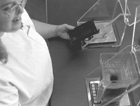

|
Be Loyal to the Royal Within By Mary Ellen Smoot, Scroll Staff |
|
 VALUES-Humility, repentance and obedience are three ways to be loyal to the royal within. |
|
"It is like a ladder in this Church: you climb step by step, until you arrive at the top. But it will be a long while after we go through the veil until we have reached the fullness of the glories of the Celestial Kingdom." (Harold B. Lee, BYU devotional, 1973) From the time we left our heavenly home and arrived on his earth, we have been given the challenge to find our way back, discover both the significance of our earthly journey and individual eternal value. We also learn to climb one rung of the ladder at a time. From the dictionary, we learn that to be loyal means to be faithful, devoted, true and dependable and that royal means "of or belonging to the family of a king or queen." As we come to understand who we really are and what the Lord expects of us, we will soon realize that there are fundamental principles that we should be loyal to, in all that we do. May I share some fundamental principles that are necessary to help us continue to ascend the ladder to the Lord. 1. Humility We must be loyal to the Lord's counsel to be humble and resist the temptation to put ourselves above the counsels of the Lord and his prophets. There are numerous examples of men and women in history who, in their anxiety to get ahead, disregard or ignore the Lord and his eternal truths, only to find that their oversight has led to their own sorrow and destruction. "The gospel requires us to yield our minds as well as our knees. Minds are often more arthritic than knees." (Neal A. Maxwell Quote Book, p. 165) In Doctrine and Covenants 112:10, the Lord counsels us, "Be thou humble, and the Lord thy God shall lead thee by the hand, and give thee answer to thy prayers." If we remain humble, we are teachable and willing to learn from the past and gain strength for the future. Through learning from others, we grow and are able to overcome those traits that would ultimately hold us back from becoming all we have the potential to achieve. 2. Repentance President Kimball taught that the failure to recognize our faults holds us back, makes our life stagnant. (Miracle of Forgiveness, p .150) According to President Kimball, "There is no royal road to repentance, no privileged path to forgiveness. Every man must follow the same course whether he be rich or poor, educated or untrained, tall or short, prince or pauper, king or commoner." (p. 149) We may be of royal birth, but to be loyal to the royal within you, it is necessary to take the steps of repentance early so that you will not have to suffer the agony of more grievous mistakes. When we develop and cultivate a sensitive and delicate conscience, life will be more productive. You will spend less time with the preoccupation of sin and more time being humble, penitent and contrite. 3. Be Obedient Those of you who have filled missions realize how important obedience is. When you are obedient to your leaders, miracles happen. You find that one investigator you have longed to reach. You are guided by the Spirit to knock on a particular door or open your mouth to someone you would ordinarily pass by. For all of us, when obedience to the Lord and his counsels becomes a quest instead of an irritation in our lives, the Spirit of the Lord becomes our constant companion in all of our decisions. I love the children's story, The Empty Pot by Demi which tells of a young boy, Ping, who loved flowers. He had a "green thumb." It seems that anything he planted burst into bloom. The Emperor was very old and asked all the children in the kingdom to gather. He was looking for someone to replace him. Seeds were given to each and every child. Ping was sure he could grow the biggest and the best. However, he did everything to grow those seeds, and they would not sprout. The story tells of his watchful care but also of his obedience to performing exactly what he had been told by the Emperor. Finally, the day came for each of the children who had been given the royal seeds to come before the Emperor, who would judge who had grown the most beautiful flower from the seeds. Ping was very sad and ashamed that, despite his efforts and meticulous and loving care, his seeds had not even sprouted. But his father encouraged him to make his presentation to the Emperor. When all the other children came with their flowers, Ping hung his head. He told the Emperor that he had been diligent and the Emperor smiled. The Emperor had baked the seeds before giving them to the children. His goal was to find someone with integrity. Ping was chosen for his obedience and honesty. This life is a time for us to prove our obedience and loyalty to the commands of our Eternal King. Like Ping, if we prove ourselves to be loyal and faithful, God, our king, will give us all that he had (D&C 84:38). May we each realize our potential, the noble heritage we have and prepare ourselves for the blessings in store for those with humility, repentance and obedience. Using these principles we will continue to ascend each rung of the ladder and develop the attributes of faithfulness, devotion and dependability so they can become a part of our lives in an illustrious way. We will come to realize the majesty of our birth and the imperial qualities of our Lord and Savior. |